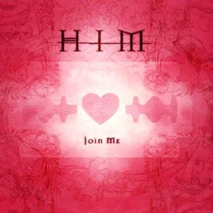

Join Me in Death
HIM
Amor creo que nunca me voy a cansar de dedicarte esta cancion jej porq me recuerda muchisimo a ti ♡ cuando la escucho pienso en ese deseo de estar juntos de unir nuestras vidas y de que ni siquiera la muerte pueda separarnos me gusta imaginar que cuando nuestra historia llegue a su fin y nuestros cuerpos descansen uno junto al otro hasta la eternidad, algun dia nos enterraran juntos amor y nuestros cuerpos se podriran juntos y que pudieramos ser uno mismo por toda la eternidad